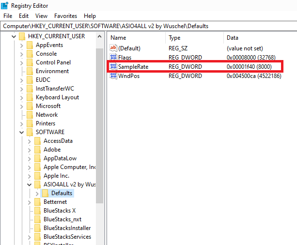

Fixing "ASIO4ALL Open at 8000Hz" Instead 44100Hz
21 August 2024 | Posts
Pearl Ramson

Hi folks.
I’ve got something exciting for sound producers and audio engineers today. Recently, a friend’s student got a Focusrite sound card, and it was all joy and excitement—until that excitement was cut short.
Why? The ASIO4ALL sample rate on their DAW was stuck at 8000Hz instead of the standard 44100Hz. Despite extensive Google searches, they couldn’t resolve the issue.
I discovered that no tutorial specifically addresses this problem. After finally solving it, my friend asked me to write about the solution. So here we are! Let’s dive in and see how to fix “ASIO4ALL Opening at 8000Hz” on your DAW.
What is ASIO4ALL?
ASIO (Audio Stream Input/Output) is a hardware-independent, low-latency audio driver that allows Windows users to bypass their computer's native sound drivers and use a more direct and efficient audio pathway.
One of its primary advantages is reduced latency—the delay between sound production and perception. Low latency is crucial for live performances, music recording, and other time-sensitive audio tasks.
44100Hz vs 8000Hz Sample Rate: Why it Matters
Sample rate simply is the number of times per second an audio signal is digitally sampled. The default or standard for music production is usually at 44100Hz or 44.1kHz.
The reason?
To accurately reproduce a sound wave, the sampling rate should be at least twice the highest frequency you want to capture, according to Nyquist theorem.
Human hearing frequency ranges up to about 20 kHz. So a sampling rate of 44.1 kHz is used as standard because it is twice the frequency of human’s for whom the sound is produced.
With this high frequency, there is a great assurance of producing audio with high level of clarity and detail.
8000Hz, in contrast, is a low sample rate used for telephone communication. Such rate is inadequate for producing high-fidelity music.
Fixing ASIO4ALL Open at 8000Hz
To ensure high-quality audio output, FL studio and other DAWs must open at a sample rate of 44100Hz.

However, sometimes they default to 8000Hz, affecting the overall performance and function of the DAW.
But, what could cause this error?
There are two main culprits here.
The good news?
The culprit is none of your audio device or DAW.
Two common culprits are:
1. Incorrect ASIO4ALL registry value settings.
2. Interference from the PC’s Bluetooth when the DAW is in use.
My friends encountered both situation.
Solution One: Adjusting ASIO4ALL Registry Values
To resolve the first problem, there are two solutions. For ASIO4ALL registry value settings to be incorrect, string value for sample rate is set at 8000Hz.
At installation, ASIO4ALL usually store its settings in the Windows registry. However, the default setting may have sample rate set correctly or incorrectly.
If the setting is incorrectly set, the simple solution is importing ASIO4ALL registry values from another PC with correct value for sample rate.
1. Import ASIO4ALL Registry Values from Another PC
- If you have access to another PC where ASIO4ALL is correctly set to 44100Hz, you can export the ASIO4ALL registry values from that PC and import them to your own.
- After importing, restart your PC. The ASIO4ALL sample rate should now open at 44100Hz on your DAW.
If this is impossible, then you can manually set the value in the registry.
2. Manually Adjust Registry Settings
- Open the Run dialog, type `regedit`, and click OK. This opens the registry editor.
- Locate ASIO4ALL key values under `HKEY_CURRENT_USER\SOFTWARE\ASIO4ALL v2 by Wuschel`.
- Look for the sample rate setting. If it’s set to 8000, double-click on it to open the value editor. The default is in hexadecimal; switch to decimal.


- Change the value from 8000 to 44100, click OK, and restart your PC. Your DAW should now open at the correct sample rate of 44100Hz.

Solution Two: Turn Off Bluetooth
Sometimes, your PC’s Bluetooth may interfere with ASIO4ALL’s operation, especially if Bluetooth is on while the DAW is in use. Simply switch off Bluetooth, restart your DAW, and ASIO4ALL should open at 44100Hz.
Take-home
To wrap it up, ASIO4ALL Open at 8000Hz is not an audio device or DAW doings. And fixing it is quiet simpler than you may ever thought: those two solutions above are all it takes to fix it asap.